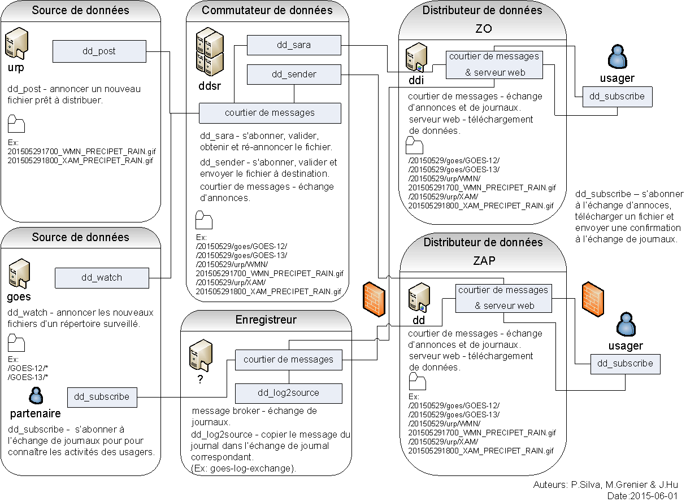

$Date$
[English]
MetPX est une collection d´outils créée afin de faciliter l´acquisition, l´aiguillage, et la dissémination de données dans un contexte météorologique. Il y a deux applications principales: Sundew et Sarracenia. MetPX-Sundew est axé sur le support et la compatibilité des systèmes matures de Système de télécommunicatio mondiale (STM) de l´Organisation mondiale de la météo (OMM). Il acquiert, transforme, et livre des produits individuels, tandis que MetPX Sarracenia adopte une nouvelle approche, et offre la copie complète (filtrée) de l'arborescence source. Sarracenia abandonne la compatibilité afin de répondre aux besoins actuels. Par contre, sundew demeure tout de même un lien essentiel aux anciens systèmes.
[ liste de couriel (Anglais-Français): metpx-devel., metpx-commit. ] [ projet: Sourceforge ]
[Documentation]
[ Téléchargement]
[Accès au code source]
[Liens, Références]
[ listes de courier: metpx-devel. ,
metpx-commit. ]
[ Page principale de dévéloppement: Sourceforge ]
MetPX-Sarracenia est un engin de copie et de distribution de données qui utilise des technologies standards (tel que les services web et le courtier de messages AMQP) afin d'effectuer des transferts de données en temps réel tout en permettant une transparence de bout en bout. Alors que chaque commutateur Sundew est unique en soit, offrant des configurations sur mesure et permutations de données multiples, Sarracenia cherche à maintenir l'intégrité de la structure des données, tel que proposée et organisée par la source, à travers tous les noeuds de la chaîne, jusqu'à destination. Le client peut fournir des accusés de réception qui se propagent en sens inverse jusqu'à la source. Tandis qu'un commutateur traditionnel échange les données de point à point, Sarracenia permet le passage des données d'un bout à l'autre du réseau, tant dans une direction que dans l'autre.
Sarracenia, à sa plus simple expression, expose une arborescence de dossiers disponibles sur la toile ("Web Accessible Folders"). Le temps de latence est une composante névralgique des applications météo: les minutes, et parfois les secondes, sont comptées. Les technologies standards, telles que ATOM et RSS, sont des technologies qui consomment beaucoup de bande passante et de ressouces lorsqu'elles doivent répondre à ces contraintes. Les standards limitent la fréquence maximale de vérification de serveur à cinq minutes. Le protocol de séquencement de messages avancés (Advanced Message Queuing Protocol, AMQP) est une approche beaucoup plus efficace pour la livraison d'annonces de nouveaux produits.

Les sources annoncent la disponibilité des données, les commutateurs en font une copie et la diffusent à leurs clients. Quand les clients téléchargent des données, ils ont l'option d'enregistrer cette transaction. Les enregistrements de transaction sont réacheminés aux sources, en passant par chaque système du chemin inverse. Ceci permet aux sources de voir exactement le chemin qu'ont pris les données pour se rendre aux clients. Avec les systèmes traditionnels d'échange de données, chaque source peut seulement confirmer que le transfert vers le prochain noeud de la chaîne a été complété. Tout transfert subséquent est « opaque » et tracer le cheminement d'un produit exige l'aide des administrateurs des systèmes intermédiaires. Grâce au concept de Sarracenia, prévoyant l'acheminement des enregistrements de transactions à travers le réseau, la diffusion des données devient transparente aux sources. Les diagnostiques en sont aussi grandement simplifiés.
Tandis que Sundew supporte plusieurs protocoles et formats de la météorologie, Sarracenia se retire de cette spécificité et généralise son approche, ce qui lui permet d'être utile pour d´autres domaines scientifiques. Le client prototype, dd_subscribe, est en service depuis 2013 et implante une grande partie des fonctions de consommateurs de données. Elle est la seule composante dans les paquets Debian actuels. Le reste des composantes devraient être disponibles à l'automne 2015.
Sarracenia est plus simple que Sundew, peu importe l'utilisateur: opérateur, dévéloppeur, analyste,
source et consommateurs de données. Bien qu´il impose une interface pour l´accès au
données, Sarracenia est complètement générique et portable. Il sera disponible sur n´importe
quelle plateforme moderne (GNU/Linux, Windows, Apple)
Pourquoi ne pas utiliser RSync?
Il existe multiples solutions pour la copie de données, pourquoi en inventer une autre? Rsync et la
plupart des autres outils sont 1:1, ils comparent source et destination. Sarracenia, bien qu´il ne sert
pas de multi-cast, est orienté vers la livraison à de multiples clients en temps réél. La synchronization
RSync se fait via la communication de l´arborescences, en calculant des signatures pour chaque fichier, pour
chaque client. Pour les arborescences importantes, comprennant plusieurs clients, ces calculs et transactions deviennent onéreuses, limitant la fréquence de mise à jour et le nombre de clients peuvant être supportés. Sarracenia évite le parcours des arborescences, et les processus qui écrivent les fichiers calculent les checksum une fois seulement, afin d'être utilisé directement par tous les intervenants. Ces deux améliorations rendent Sarracenia beaucoup plus efficace que RSync dans le cas d'arborescences imposantes comprenant l'ajout fréquent de fichiers. LSync est un outil qui utilise INOTIFY sur GNU/Linux pour avoir une notification en temps réel, mais la gestion
des checksum et la communication des enregistrements à travers le réseau n'existent pas. De plus,
LSync n´est pas interopérable avec d'autres systèmes d'exploitation.
RSync est également une solution point à point. Sarracenia mise sur la "transitivité", c'est-à-dire sur la capacité d'enchaîner plusieurs commutateurs de produits et de s´assurer que les accusées de réception se propagent jusqu´à
la source. Par contre, l´implantation initiale de sarracenia ne traite pas des deltas (changement de
contenu de fichiers existants) et va télécharger le contenu complet a chaque annonce. On étudie présentement
le cas des deltas, et l´utilisation de l´algorithm RSync via l´outil zsync est en considération.
MetPX-Sundew
MetPX-Sundew est un système de commutation de messages sur les circuits TCP/IP du Système de télécommunications mondiales (STM) de l'Organisation mondial de la météorologie (l'OMM.) Pour certaines fonctionnalités, le système est déjà d'une qualité opérationelle et est utilisé au Centre météorologique canadien en tant que noyau national de commutation de bulletins et fichiers (satelites, radars, produits numériques). le logiciel permet la participation canadienne à des projets internationaux tel que Unidata et TIGGE via une passerelle à LDM, ainsi que NAEFS via le transfert de fichiers. MetPX se démarque par sa capacité de routage détaillé a très faible latence et à haute vitesse. Le projet se veut une sorte de plateforme partagé et universelle pour les télécommunications via STM, sur le modèle d´Apache pour les serveurs web. Types de connections TCP/IP:
Fonctionnalités:
Il y a actuellement trois modules dans ce projet et un quatrième est à l'étude. Les modules de MetPX sont nommés selon des noms d'espèces de plantes en voie de disparition au Canada. (voir Espèces en péril )
Plateforme: GNU/Linux dérivé de Debian (Sarge, Etch, Lenny, Ubuntu...) N´importe quel système GNU/Linux moderne (2.6 vanille ou bien 2.4 avec plusieurs rustines). Python version 2.3 où plus récent)
license: GPLv2
le code source en dévéloppement est disponible en utilisant subversion via: git clone git://git.code.sf.net/p/metpx/git metpx
( accès anonyme pour fins de lecture. )
Documentation
La documentation en français n´est pas disponible pour le moment.
Ca va être traduite une fois qu´on aura stabilisé une première édition en anglais.
Veuillez consulter la Documentation anglaise. pour l´instant
Téléchargement
Téléchargement
Le module Sundew est relativement stable et peut être téléchargé du site de Sourceforge. Les autres modules ne sont pas assez matures pour être distribués.
Il est à noter qu'il est assez critique d´installer des ´jobs cron´ (mr-clean en particulier) parce que le cas écheant, le serveur va tranquillement rouler de plus en plus lentement jusqu´au moment où il arrête carrément. Ça serait optimal de vous inscrire à la liste de couriel (français, bienvenu, peut-être même préféré...) ce qui nous donnera des indices pour des tâches futures et de potentielles collaborations.
Sentez-vous libre de prendre une copie de la version à jour du code source via: